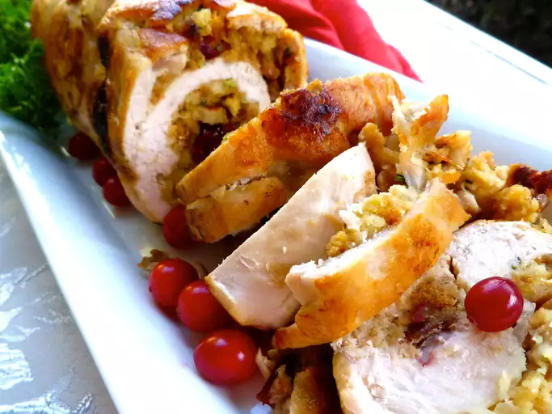

Stuffed Turkey

This stuffed turkey recipe is perfect for special occasions like Thanksgiving or holiday dinners. The turkey is filled with a savory stuffing made from a blend of bread, vegetables, and herbs, and then roasted to a golden perfection.
Ingredients
- 1 whole turkey (12-14 pounds)
- 1 tablespoon olive oil
- 1 onion, chopped
- 2 celery stalks, chopped
- 2 cloves garlic, minced
- 1 cup chicken broth
- 4 cups bread cubes (preferably stale)
- 1/2 cup fresh parsley, chopped
- 1 teaspoon dried sage
- 1 teaspoon dried thyme
- Salt and black pepper to taste
- 1 egg, beaten
- 1/4 cup melted butter
- 1 lemon, cut into wedges (for garnish)
Steps
- Preheat your oven to 350°F (175°C).
- In a large skillet, heat olive oil over medium heat. Add chopped onion, celery, and garlic, and cook until softened.
- In a large bowl, combine the bread cubes, parsley, sage, thyme, salt, and black pepper.
- Add the cooked vegetables, chicken broth, beaten egg, and melted butter to the bread mixture. Mix well to combine.
- Stuff the turkey cavity with the stuffing mixture. Tie the turkey legs together with kitchen twine and tuck the wing tips under the bird.
- Place the turkey on a roasting rack in a roasting pan. Brush the skin with olive oil and season with salt and pepper.
- Roast in the preheated oven for 3 to 4 hours, or until the internal temperature of the turkey reaches 165°F (74°C) and the stuffing is hot.
- Remove the turkey from the oven and let it rest for 20 minutes before carving.
- Garnish with lemon wedges and serve.